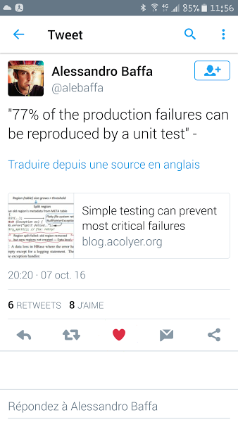
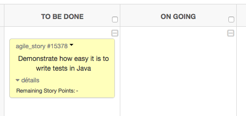
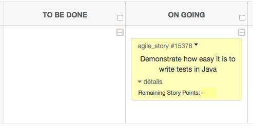

Pour donner le meilleur

Pourquoi tester?
Un exemple concret de test obligatoire : Asciidoctor.org
Un exemple concret de documentation obligatoire : Eclipse
Typologie des tests
JUnit etc.
Application concrète pour MPA2016
A majority of the production failures (77%) can be reproduced by a unit test.
Yuan et al. OSDI 2014
| Un tweet récent! |
| Pour lire l’article en question : https://blog.acolyer.org/2016/10/06/simple-testing-can-prevent-most-critical-failures/amp/ |
Tout ce qui est susceptible de mal tourner tournera nécessairement mal.
Edward A. Murphy Jr.
| Autour d’une bière avec Dan Allen, à Denver, Colorado #ILoveMyJob |
bundle to install development dependencies.bundle exec rake to run the tests.
If your tests pass, return to step 4.bundle exec rake to run the tests.
If your tests fail, return to step 6.| Après un footing avec Gaël Blondel, à Saint-Malo #ILoveMyJob |
[…] an Eclipse project is providing extensible frameworks and applications accessible via documented APIs.
Eclipse Development Process
Vérification | Validation |
Le produit est-il bon ? | Le produit est-il le bon ? |
Are you building it right? | Are you building the right thing? |
Réalisée par le développeur | Réalisée par le testeur |
En premier | Après la vérification |
Les exceptions |
|
Le temps d’exécution |
|
Uniquement certains environnement |
|
S’exécute avant les autres tests (e.g., accès à une base) |
|
| On force le test à échouer |
| La condition est vraie |
| La condition est fausse |
| Les deux valeurs sont égales |
| Objet nul |
| Objets identiques (même réf.) |
Considérons une fonction int add(int,int); d’une classe myClass.
Définir le comportement normal de la fonction (sortie normale pour des paramètres corrects).
//for normal addition
@Test
public void testAdd1Plus1() {
int x = 1 ; int y = 1;
assertEquals(2, myClass.add(x,y));
}Ajouter des tests pour les cas particuliers :
null sont gérés, e.g., ://if you are using 0 as default for null, make sure your class works in that case.
@Test
public void testAdd1Plus1() {
int y = 1;
assertEquals(0, myClass.add(null,y));
}Surtout aucun!!
JUnit assumes that all test methods can be executed in an arbitrary order. Well-written test code should not assume any order, i.e., tests should not depend on other tests.
JUnit manual
Pensez à utiliser le plug-in infinitest.
Exemple de la librairie Robot :
Robot bot = new Robot();
bot.mouseMove(10,10);
bot.mousePress(InputEvent.BUTTON1_MASK);
//add time between press and release or the input event system may
//not think it is a click
try{Thread.sleep(250);}catch(InterruptedException e){}
bot.mouseRelease(InputEvent.BUTTON1_MASK);To Be Done à On going |  |
| Mettre à jour Tuleap |
| Confirmation par email |
bruel (master) $ git checkout -b US-15378
Switched to a new branch 'US-15378'
bruel (US-15378) $Objectif de la tâche : créer une classe Pile.
CréerPile : -> Pile estVide : Pile -> Booléen Empiler : Pile * Elément -> Pile Dépiler : Pile -> Pile Sommet : Pile -> Elément |
Sommet(p) valide Si et Seulement Si estVide(p) == FAUX Dépiler(p) valide Si et Seulement Si estVide(p) == FAUX |
(1) estVide(CréerPile()) (2) estVide(Empiler(p,e)) == FAUX (3) estVide(Dépiler(Empiler(p,e))) Si et Seulement Si estVide(p) (4) Sommet(Empiler(p,e)) == e (5) !estVide(p) => Sommet(Dépiler(Empiler(p,e))) == Sommet(p) |
import junit.textui.TestRunner;
import junit.framework.TestSuite;
import junit.framework.TestCase;
public class PileTest extends TestCase {
public void test_type_new_Pile() throws Exception {
Pile pile = new Pile() ;
assertEquals("new Pile() retourne une Pile", "Pile", pile.getClass().getName());
}
}| Oups, JUnit n’est pas dans le path… |
| Création rapide de la classe `Pile` |
| Run as JUnit Tests |
mainPour ceux qui veulent vraiment un main :
public class PileTest extends TestCase {
static int totalAssertions = 0;
static int bilanAssertions = 0;
public void test_type_new_Pile() throws Exception {
Pile pile = new Pile() ;
totalAssertions++ ;
assertEquals("new Pile() retourne une Pile", "Pile", pile.getClass().getName());
bilanAssertions++ ;
}
public static void main(String[] args) {
junit.textui.TestRunner.run(new TestSuite(PileTest.class));
if (bilanAssertions == totalAssertions) { System.out.print("Bravo !"); }
System.out.println(" "+bilanAssertions+"/"+totalAssertions+" assertions vérifiées");
} // fin main
} // fin PileTestEnexécutant le test comme un programme Java on obtient :
...
Time: 0,005
OK (3 tests)
Bravo ! 3/3 assertions vérifiéesSi vous utilisez SciTE au lieu de Eclipse, pour compiler le programme de Test n’oubliez pas de placer les fichiers
javac -cp .;junit.jar PileTest.java |
public void test_type_empiler() throws Exception {
Pile pile = new Pile() ;
assertEquals("empiler(pile,'XXX') retourne une Pile", "Pile", pile.empiler("XXX").getClass().getName());
}| Erreur de syntaxe |
public class Pile {
public Object empiler(String string) {
// TODO Auto-generated method stub
return this;
}
}La méthode générée par défaut retourne |
| Ajout simple de la méthode manquante |
| Passage du test |
public void test_axiome1() {
Pile pile = new Pile() ;
assertTrue("Une nouvelle pile est vide", pile.estVide(pile));
}public boolean estVide(Pile pile) {
// TODO Auto-generated method stub
return false;
}| Passage du test |
Junit n’exécute que les fonctions qui commencent pas Plus récemment, on utilise l’annotation |
public boolean estVide(Pile pile) {
// Smartly modified by JMB to pass the test!
return true;
}| Passage du test |
Bien sûr le code n’est pas correcte pour l’instant (on s’en rendra compte dès les tests suivants)! Une meilleure solution pourrait être : |
bruel (US-15378) $ git commit -am "Adding push feature. Tests OK"
[US-15378 78f3242] Adding push feature. Tests OK
1 file changed, 2 insertions(+), 3 deletions(-)
bruel (US-15378) $ git checkout devs
Switched to branch 'devs'
bruel (devs) $ git merge US-15378devsbruel (devs) $ git commit -am "..."
...
bruel (devs) $ git push origin devs
...
bruel (devs) $ git branch -D US-15378
Deleted branch US-15378 (was f392a73).On going à ReviewGroupe | # classes de test | # tests | Status |
1A1 | 1 | ~30 | |
1A2 | 1 | 1 | |
1B1 | 1 | ~10 | |
1B2 | ? | 2 |
État des builds et des tests (au 08/10/2016 à 22h40)
Groupe | # classes de test | # tests | Status |
2A1 | 0 | 0 | |
2A2 | 1 | ~10 | |
2B1 | 2 | ~10 | |
2B2 | 0 | 0 |
État des builds et des tests (au 08/10/2016 à 22h40)
Groupe | # classes de test | # tests | Status |
3A1 | ? | ? | ??? |
3A2 | 1 | 0 | |
3B1 | 0 | 0 | |
3B2 | 0 | 0 |
État des builds et des tests (au 08/10/2016 à 22h40)
Position yourself in the project repository (
C:\Users\Etudiant\Desktop\Nouveau dossier\MPA2016-Gxxx)
Anonymous
Pour lancer l’application, lancer
ant Window
Extrait de la Doc. Utilisateur
$ ant Window
BUILD FAILED
Target "Window" does not exist in the project ...build.xml qui manque…Pour lancer l’application, lancer
ant
Extrait de la Doc. Utilisateur
$ ant
Buildfile: build.xml does not exist!